What this does
It keeps a copy of your watchlists in your own free online storage, so they show up on your other computers too.
This is optional. Without it, your lists stay saved on this computer.
FishView Watchlist · Help
A picture-by-picture guide. You do not need any technical knowledge. Just follow the numbered steps and look for the red boxes in each picture. They show where to click.
It keeps a copy of your watchlists in your own free online storage, so they show up on your other computers too.
This is optional. Without it, your lists stay saved on this computer.
Supabase's Free plan costs nothing.
About 15 minutes
You only do this once. After that, syncing happens by itself.
fv_list_book, to keep your lists.https://abcd1234.supabase.co. It tells FishView where your storage box is.sb_publishable_. Think of it as the address label on the box. It is safe to paste into FishView.sb_secret_. Never copy it into FishView or share it with anyone.Already have a Supabase account? Sign in and skip to step 5.
Open supabase.com/dashboard in a new tab. At the bottom of the page, next to “Don’t have an account?”, click Sign up.
You can also use the Open Supabase button in FishView’s Cloud tab.
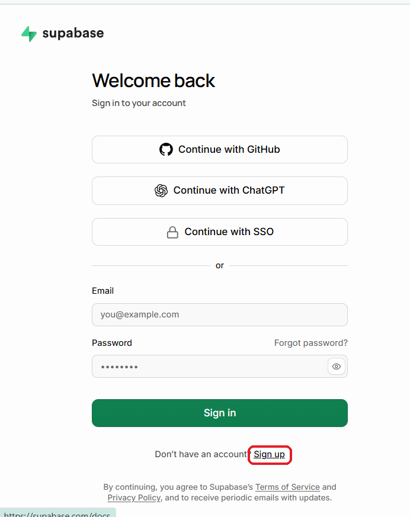
Type your email address and make up a password. Then click the green Sign up button.
Password 1 This is only for logging in to the Supabase website. You won’t type it into FishView.
Prefer not to make a new password? You can use one of the “Continue with…” buttons instead.
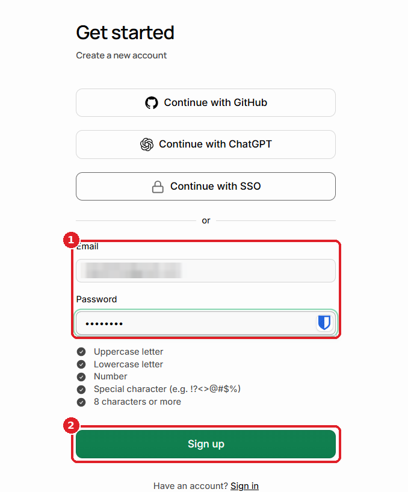
Supabase will show a “Check your email” message. Go to your inbox, open the email from Supabase and click Confirm Email Address. Supabase will open again in your browser.
Can’t find it? Look in your Spam or Promotions folder. The link stops working after about 10 minutes. If it has expired, sign up again to get a new one.
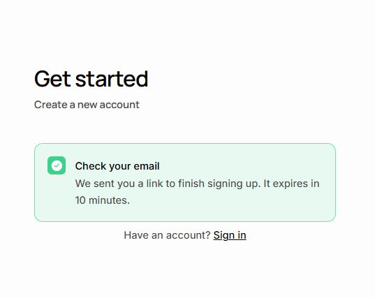
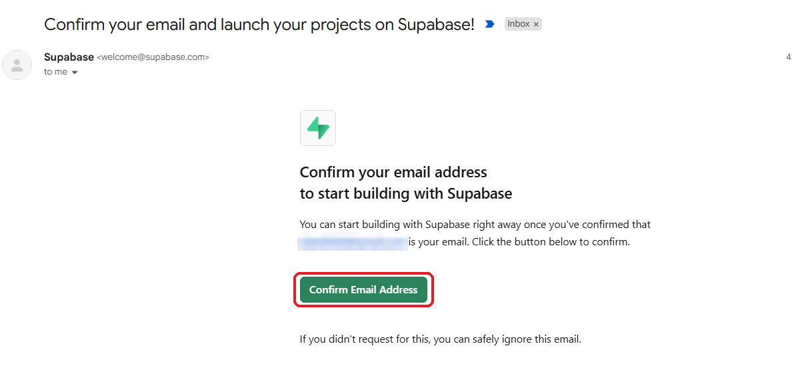
Supabase asks you to create an organization. This is just a folder that holds your projects.
Then click Create organization.
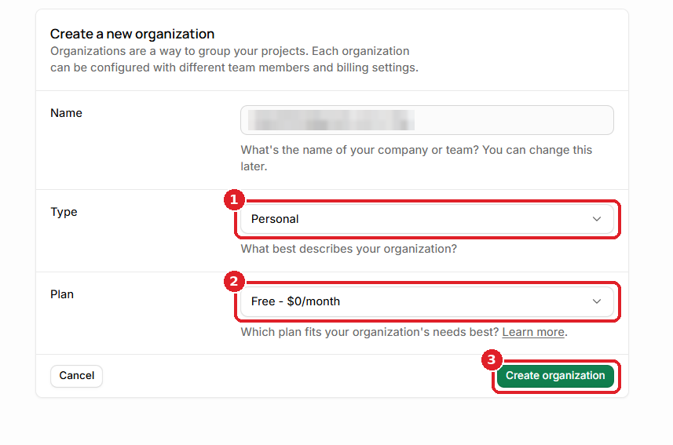
On the Projects page, click the green New project button.
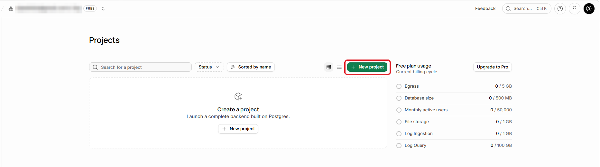
Then click the create button at the bottom of the form. Supabase takes a minute or two to set up your project. Wait until it’s ready before you go on.
Password 2 The database password is only for Supabase. Keep it safe, but don’t type it into FishView.
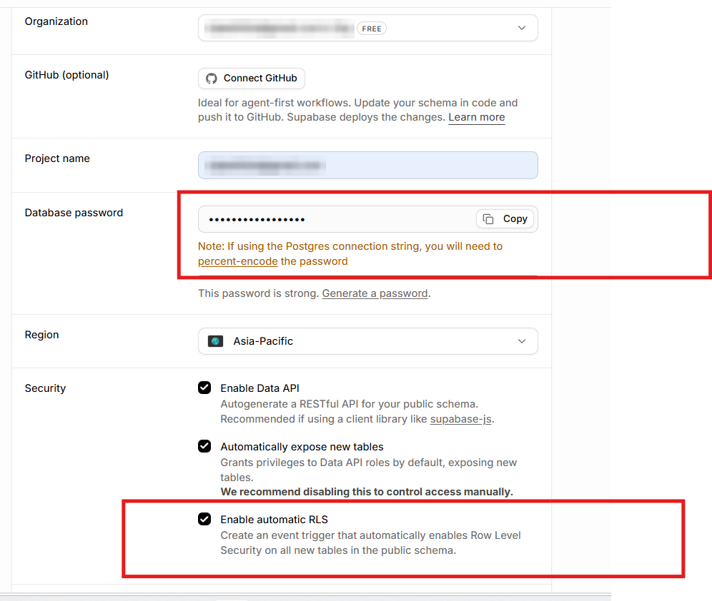
FishView gives you a ready-made set of instructions (the “setup SQL”) that builds the table for you. You won’t need to type any code.
Once your project is ready, find SQL Editor in the menu on the left and click it. If you only see small icons, hover over the menu to show the names.
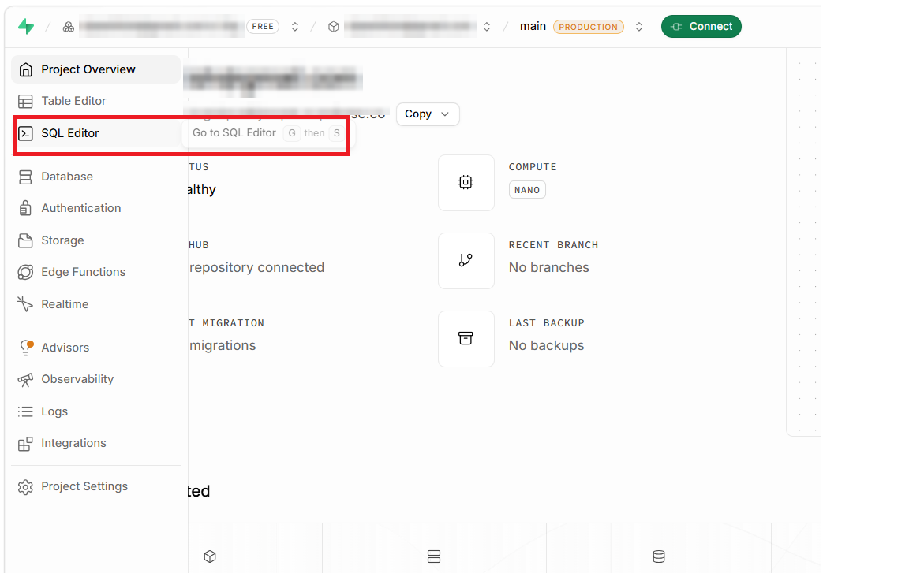
Go back to the FishView dock (beside TradingView, Screener.in or Chartink). Click the Cloud tab, then click the purple Copy setup SQL button.
This copies the instructions that build the table where FishView saves your watchlists. FishView shows “Setup SQL copied” when it’s done.
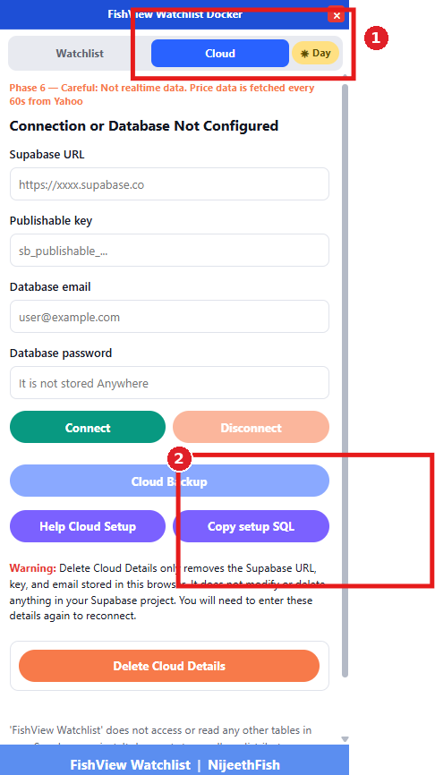
Go back to the Supabase SQL Editor tab. Click inside the big empty box and paste (Ctrl + V, or ⌘ + V on a Mac). Then click the green Run button at the top right.
Look for “Success. No rows returned” at the bottom. That means it worked. The table starts empty, which is normal.
Supabase may show a warning before it runs. If you pasted FishView’s setup SQL, it’s fine to confirm.
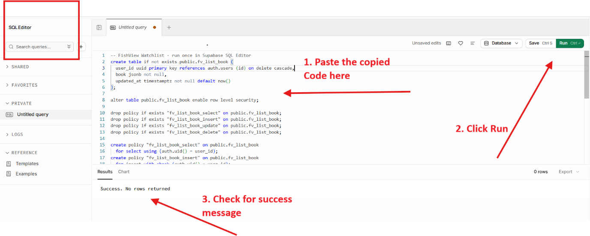
This is the same setup SQL that FishView’s Copy setup SQL button copies. Only run it in your own project.
-- FishView Watchlist · run once in Supabase SQL Editor
create table if not exists public.fv_list_book (
user_id uuid primary key references auth.users (id) on delete cascade,
book jsonb not null,
updated_at timestamptz not null default now()
);
alter table public.fv_list_book enable row level security;
drop policy if exists "fv_list_book_select" on public.fv_list_book;
drop policy if exists "fv_list_book_insert" on public.fv_list_book;
drop policy if exists "fv_list_book_update" on public.fv_list_book;
drop policy if exists "fv_list_book_delete" on public.fv_list_book;
create policy "fv_list_book_select" on public.fv_list_book
for select using (auth.uid() = user_id);
create policy "fv_list_book_insert" on public.fv_list_book
for insert with check (auth.uid() = user_id);
create policy "fv_list_book_update" on public.fv_list_book
for update using (auth.uid() = user_id) with check (auth.uid() = user_id);
create policy "fv_list_book_delete" on public.fv_list_book
for delete using (auth.uid() = user_id);To copy by hand: click inside the box, press Ctrl + A (or ⌘ + A), then Ctrl + C (or ⌘ + C).
Now you create the email and password that FishView will use to open your storage box.
In the left menu, click Authentication (the icon that looks like a small lock or badge). On the Users page, click the green Add user button at the top right, then choose Create new user.
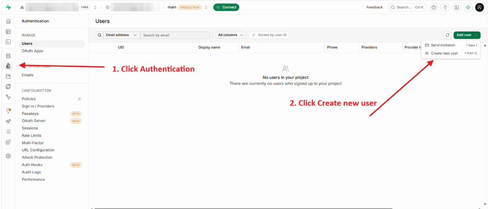
Type an email address and a password. Leave Auto confirm user? ticked. Then click Create user.
Password 3 Write this email and password down. You will paste them into FishView in step 16.
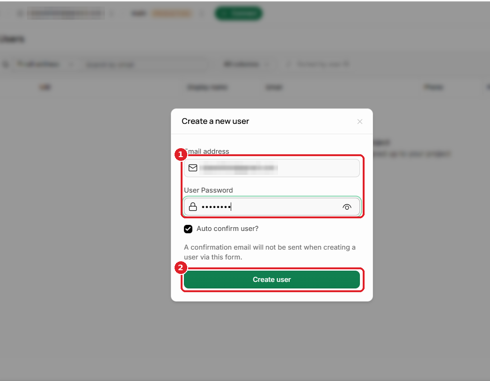
FishView needs two things from Supabase: the API URL (where your box is) and the Publishable key (its address label). Keep FishView’s Cloud tab open so you can paste each one as you go.
In the left menu, click Integrations. On the next screen, under Installed, click Data API.
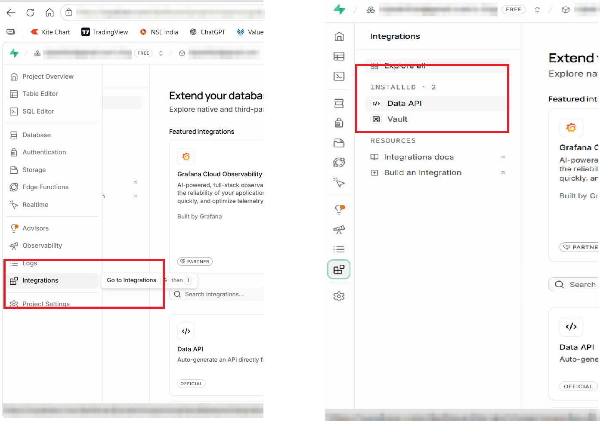
In the API URL box, click Copy. Paste it into FishView’s Supabase URL box.
It looks like https://abcd1234.supabase.co/rest/v1/. If it ends with /rest/v1/, delete that part so only https://abcd1234.supabase.co is left. That matches the example shown in FishView’s box.
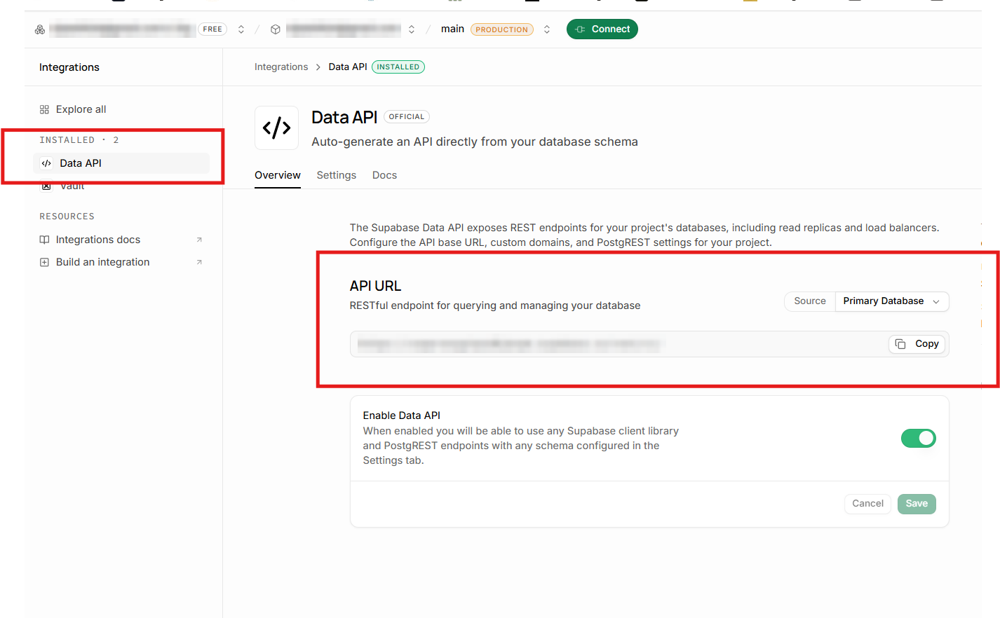
In the left menu, click Project Settings (the gear icon at the bottom).
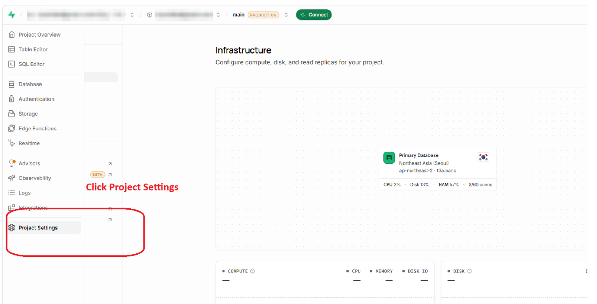
Click API Keys. In the Publishable key section, click the small copy icon next to the key that starts with sb_publishable_. Paste it into FishView’s Publishable key box.
Never copy anything from Secret keys (sb_secret_…) or anything called service_role. Those are master keys.
Older projects may call it the anon public key (a long code starting with eyJ). You can use that one instead.
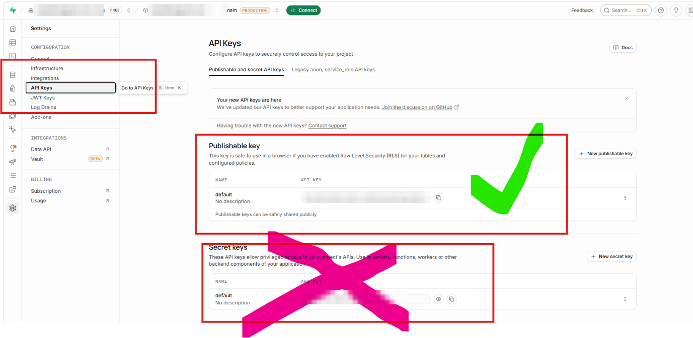
You have everything you need. Go back to FishView.
In FishView’s Cloud tab, fill in the four boxes like this:
| FishView box | What to paste | Where you got it |
|---|---|---|
| Supabase URL | Your API URL, e.g. https://abcd1234.supabase.co | Step 13 |
| Publishable key | The key starting with sb_publishable_ | Step 15 |
| The email of the user you created | Step 11 | |
| Password | The password of that user (Password 3) | Step 11 |
Then click the green Connect button.
Your password is never stored. You type it once to connect, and FishView does not save it anywhere on your computer. The URL, key and email are saved in this browser only, so you don’t have to type them again.
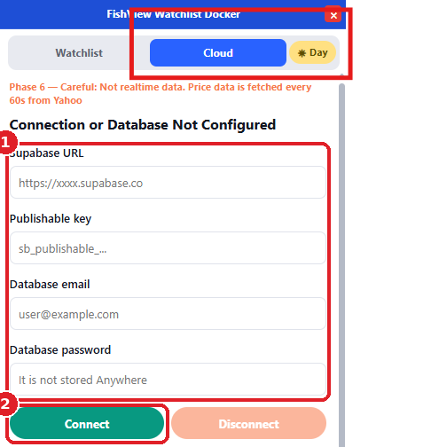
You should see a cloud icon and the words “Cloud Link Established…” on the Cloud tab and the Watchlist tab.
That’s it. From now on, when you change a list, FishView saves it to your cloud about 2 seconds later. On another computer, install FishView and connect with the same details (step 16). Your lists will appear there too.
Want to double-check? In Supabase, open Table Editor → fv_list_book. You should see exactly one row.
Use the email and password you made in step 11 (Authentication → Users). Don’t use your Supabase website login (password 1) or the database password (password 2).
Paste the Publishable key (sb_publishable_…), or the anon public key on older projects. Never the Secret key or service_role key. Check you copied the whole key, with no spaces at the start or end.
The setup SQL probably hasn’t run yet. Repeat steps 7–9 and make sure you see “Success. No rows returned”. The table must be called fv_list_book.
It should look like https://abcd1234.supabase.co. Remove anything after .supabase.co (such as /rest/v1/) and any spaces.
Check Spam and Promotions. The link expires after about 10 minutes, so sign up again if it has expired. You can also use a “Continue with…” option on the sign-up page.
No. FishView only talks to the Supabase project you created. We don’t host your stocks and can’t see your database. FishView only uses its own table (fv_list_book). It keeps all your lists, stocks and labels as one saved copy, not one row per stock.
Disconnect signs you out of the cloud. Your details stay filled in. Delete Cloud Details removes the URL, key and email from this browser only. Neither one deletes your Supabase project or the watchlists saved in it.
No. Cloud is optional. Your watchlists are always saved on this computer, even if you never connect.